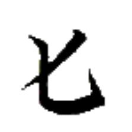
ルㇷ゚→
【鳥】
[名詞]
鳥
鳥車
ルㇷ゚→カウン→
【鳥車】
[名詞]
飛行機
鳥船
ルㇷ゚→ムアㇰ→
【鳥船】
[名詞]
飛行機、航空機
鳥機
ルㇷ゚→キㇰ→
【鳥機】
[名詞]
飛行機、航空機
鳥家
ルㇷ゚→ムㇳ⤴
【鳥家】
[名詞]
鳥の巣
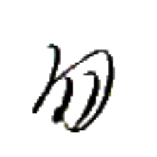
ザウㇷ゚→
【獣】
[名詞]
獣、動物
[状態動詞]
〔稀に〕愚かである、つまらない
獣軸
ザウㇷ゚→ラー→
【獣軸】
[名詞]
(セッカイクの)王
木獣
フㇷ゚→ザウㇷ゚→
【木獣】
[名詞]
うさぎ
毛獣
イㇺ→ザウㇷ゚→
【毛獣】
[名詞]
(雅語)羊
享獣
ゼゥㇷ゚·ザウㇷ゚→
【享獣】
[離合詞]
動物を狩る
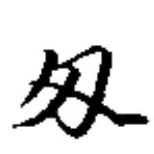
ヨウ⤴
【牛】
[名詞]
牛
牛蜜
ヨウ⤴ズィㇰ⤴
【牛蜜】
[名詞]
牛乳
甘塩牛
トゥㇺ→クオウ→ヨウ⤴
【甘塩牛】
[名詞]
甘辛く煮た牛肉
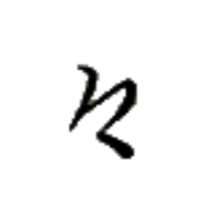
スエゥー→
【或】
[名詞]
何か
或人
スエゥー→スㇰ⤴
【或人】
[名詞]
誰か
或処
スエゥー→ホエゥ·
【或処】
[場所詞]
どこか
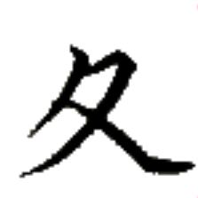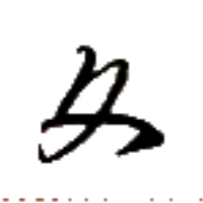
ポㇰ·
【色】
[名詞]
色
色石筆
ポㇰ·ズィュー⤴クアー⤴
【色石筆】
[名詞]
色鉛筆
草色
コㇳ·ポㇰ·
【草色】
[名詞]
薄い緑色、黄緑色
月色
シェㇺ→ポㇰ·
【月色】
[名詞]
黄色
皇色
タㇺ⤴ポㇰ·
【皇色】
[名詞]
深い緑色
種色
デゥㇳ·ポㇰ·
【種色】
[名詞]
茶色
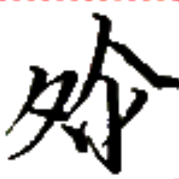
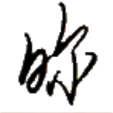
フオㇰ⤴
【黒】【玄】
[状態動詞]
黒い
男付黒衣加黒冠
キー→クン⤴フオㇰ⤴タㇰ→アㇳ·フオㇰ⤴アイ⤴
【男付黒衣加黒冠】
男は黒い服を着て黒い帽子をかぶっている。
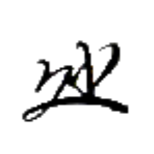
リオㇰ→
【白】
[状態動詞]
白い
白光石
リオㇰ→アイㇰ⤴ズィュー⤴
【白光石】
[名詞]
ダイヤモンド
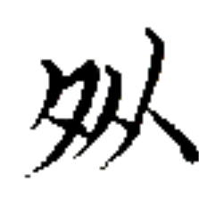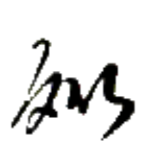
ヌオㇰ⤴
【青】
[状態動詞]
青い
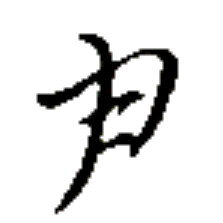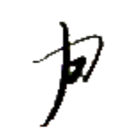
ルアー→
【耳】
[動詞]
聞く
耳識
ルアー→サン⤴
【耳識】
[動詞]
注意を傾けて聞く
[状態動詞]
聞いて分かる
[節要求動詞]
～と伝え聞く
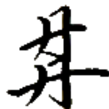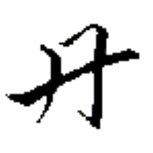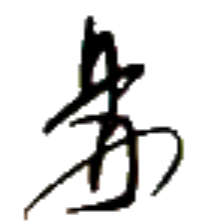
ザㇰ⤴
【来】【耒】
[動詞]
来る、～へやってくる
[状態動詞]
～出身である
[後置副詞]
(主語)の元へと
心来
ヒアー→ザㇰ⤴
【心来】
[動詞]
感じる
急来
ザㇺ→ザㇰ⤴
【急来】
[動詞]
走ってやってくる
識来
サン⤴ザㇰ⤴
【識来】
[動詞]
理解する
再来
ティュ·ザㇰ⤴
【再来】
[動詞]
～(場所)へと戻る
与来
トゥイ⤴ザㇰ⤴
【与来】
[動詞]
持ってくる
引来
ミー⤴ザㇰ⤴
【引来】
[動詞]
引き寄せる
集来
ダㇳ⤴ザㇰ⤴
【集来】
[動詞]
集める
手来
ホㇷ゚→ザㇰ⤴
【手来】
[動詞]
手に取る
心来如
ヒアー→ザㇰ⤴エゥㇺ·
【心来如】
[節要求動詞]
まるで～したかと思った
我心来如我壊終
パイ⤴ヒアー→ザㇰ⤴エゥㇺ·パイ⤴モㇳ⤴タ·
【我心来如我壊終】
わたし、死んだかと思った。
皇再来
タㇺ⤴ティュ·ザㇰ⤴
【皇再来】
[名詞]
(セッカイクの減点役)タムの千日手
再識来
ティュ·サン⤴ザㇰ⤴
【再識来】
[動詞]
思い起こす、思い出す
新星善来
ルー⤴ペゥㇳ⤴カイㇳ·ザㇰ⤴
【新星善来】
[間投詞]
あけましておめでとう
[間投詞]
お誕生日おめでとう

 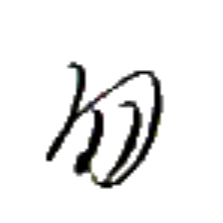
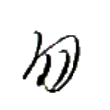

 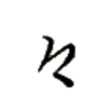
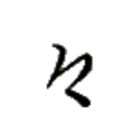
 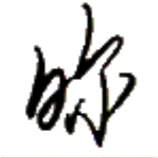
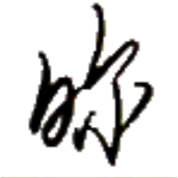
 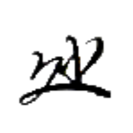
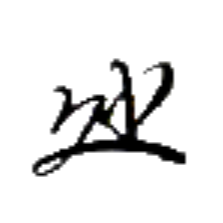